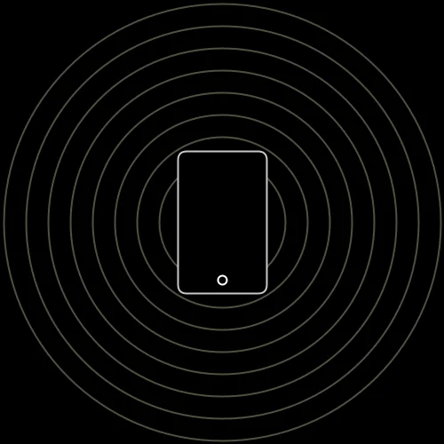
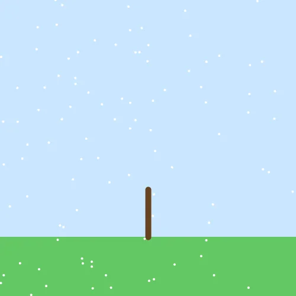
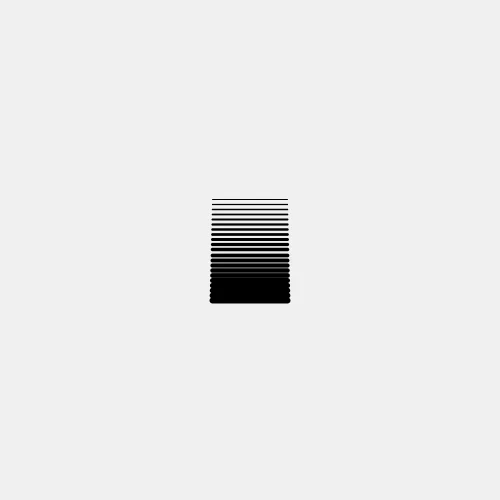

DES 111 · SPRING 2025 · PROJECT 02 · PROCESSING / MOTION
InMotion — Animated Studies
Motion as a tool for expressing mood, repetition, and response.

01 / OVERVIEW
Concept & approach
Four short coded motion explorations: a glowing phone, a repeating seasonal scene, color patterns, and a spring-like visual toy controlled by the mouse.
The coursework describes a phone glow that pulses outward, seasonal changes on a loop, patterns that progress through a grid, and a toy responding to mouse interaction. The featured images are frames, not recordings of every animation.
02 / SELECTED OUTPUTS
From the original coursework



03 / TOOLS & SOURCE
Built with Processing
Processing (.pde) · loops · timing · input · color
Original .pde source files are provided for inspection. Opening the files in Processing may require a compatible Processing installation.